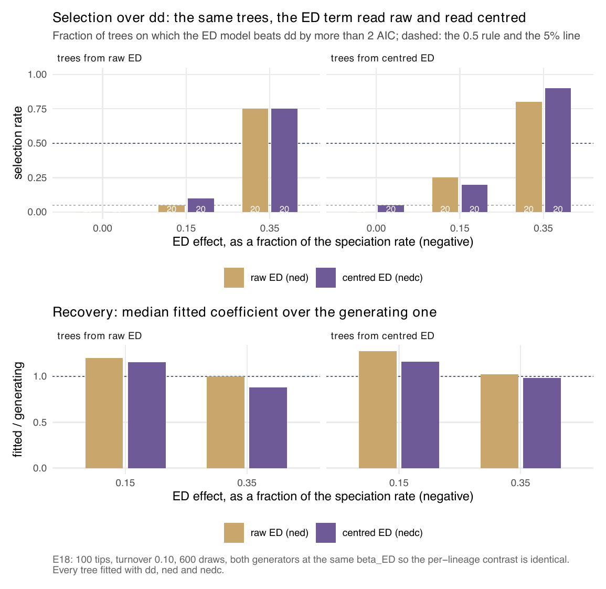
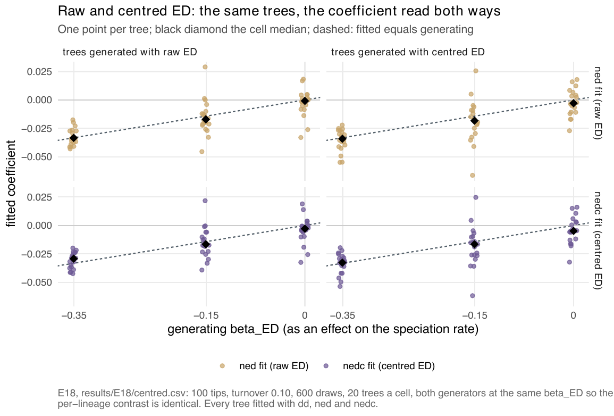

E18 — A centred ED covariate
| Status | complete (120 trees, all fitted) |
| Package build | the build audit puts the libraries of E18-E23 at edce33d … f5bf6f1, identical to clean builds; the centred models are in emphasis main from edce33d |
| Driver / analysis | sim/E18-centred.R; figures fig-centred, fig-s-nedc-recovery |
| Data | results/E18/centred.csv (120 rows) |
Question
Fair-proportion ED is not centred: \(\mathrm{ED}_s = \overline{\mathrm{ED}} + e_s\), and the clade mean \(\overline{\mathrm{ED}} = \mathrm{PD}/N\) is a clade-level quantity that \(N\) already tracks. \(D\) is centred by construction; ED is not. On Icteridae (E5) ed alone loses to dd while ned beats both by 15-17 AIC. The hypothesis: \(\beta_{ED}\) pays two AIC units to carry a component \(N\) already carries, so a centred covariate \(\mathrm{ED}^*_s = \mathrm{ED}_s -
\mathrm{PD}/N\) (package models edc, nedc) would make the same contrast selectable where E12 found selection at -0.15\(\lambda\) of only 0.05-0.55.
Design
| parameter | value | meaning |
|---|---|---|
| generators | ned (raw ED) and nedc (centred ED) |
the same \(\beta_{ED}\), so the per-lineage contrast is identical and only the clade-level shift differs |
| ED effect | 0, -0.15, -0.35 \(\lambda\) | linear link |
| tips, turnover | 100, 0.10 | \(K\) recalibrated per generator |
| trees per cell | 20 | 6 cells, 120 trees |
| candidates | dd, ned, nedc |
every tree fitted with all three |
| draws, iterations, clock | 600, max_iter 100, 50 minutes (3000 s) |
|
| proposal, box | surrogate; sim/box.R |
under the centred covariate the surrogate's mean-field lineage has \(\mathrm{ED}^* = 0\), so its rate is the dd rate |
Pre-set rule
00-design.md §E18: selection at -0.15\(\lambda\) rising from E12's 0.05-0.55 to \(\ge 0.5\) under the centred fit, with \(\hat\beta_{ED^*}\) recovered no worse than \(\hat\beta_{ED}\). If it does not move, the difficulty is power and not parametrisation, and the centred form is reported as an equivalent choice rather than a better one.
Results
| generated | effect | fit | ratio (q1-q3) | sign | median ESS of 600 | fits < 10 | over dd by > 2 AIC |
stops conv/cap/clock |
|---|---|---|---|---|---|---|---|---|
| ned | -0.35\(\lambda\) | ned | 1.00 (0.82-1.13) | 1.00 | 40.0 | 3 | 0.75 | 0/1/19 |
| ned | -0.35\(\lambda\) | nedc | 0.88 (0.74-1.11) | 1.00 | 41.2 | 4 | 0.75 | 0/5/15 |
| nedc | -0.35\(\lambda\) | ned | 1.03 (0.84-1.20) | 1.00 | 33.5 | 1 | 0.80 | 0/1/19 |
| nedc | -0.35\(\lambda\) | nedc | 0.98 (0.85-1.13) | 1.00 | 41.4 | 2 | 0.90 | 0/3/17 |
| ned | -0.15\(\lambda\) | ned | 1.20 (0.81-1.51) | 0.90 | 63.9 | 2 | 0.05 | 0/2/18 |
| ned | -0.15\(\lambda\) | nedc | 1.16 (0.64-1.62) | 0.95 | 53.1 | 1 | 0.10 | 0/4/16 |
| nedc | -0.15\(\lambda\) | ned | 1.28 (0.65-1.83) | 0.90 | 35.0 | 2 | 0.25 | 0/2/18 |
| nedc | -0.15\(\lambda\) | nedc | 1.16 (0.71-1.83) | 0.90 | 56.3 | 1 | 0.20 | 0/3/17 |
| ned | 0 | ned / nedc | median \(\hat\beta\) -0.00084 / -0.0029 | — | 74.4 / 57.3 | 1 / 3 | FP 0.00 / 0.00 | 0/8/12, 0/15/5 |
| nedc | 0 | ned / nedc | median \(\hat\beta\) -0.0029 / -0.0048 | — | 124.1 / 80.5 | 1 / 1 | FP 0.00 / 0.05 | 1/10/9, 0/14/6 |
On the same tree, the centred fit's AIC is lower than the raw fit's by a median 0.73 and 0.89 (raw-generated trees, -0.35 and -0.15\(\lambda\)) and 1.43 and 0.67 (centred-generated), and by +0.06 and -0.11 at zero (delta_c_vs_raw): the direction the hypothesis predicts, smaller than the 2 units that change a choice. No cell is sampler-limited; 75% to 95% of the fits at an effect ended on their clock, so the cells are clock-limited by the later convention.

dd by > 2 AIC for the raw (gold) and centred (purple) fit, on trees generated each way; at -0.15\(\lambda\) both stay at 0.05-0.25, below the dashed 0.5 of the rule. Bottom: median fitted over generating coefficient, 0.88 to 1.28 in every cell.
Conclusion
Rule not met. Under the centred fit, selection at -0.15\(\lambda\) is 0.10 on raw-generated trees and 0.20 on centred-generated trees, not \(\ge 0.5\). Recovery is no worse (0.88-1.16 for nedc against 1.00-1.28 for ned), and false positives stay at 0 to 1 of 20. The centring moves AIC by under one unit in the predicted direction, so the difficulty at -0.15\(\lambda\) is power, not parametrisation, and nedc is an equivalent model, offered in the package but not the default. E18 measures only 100 tips, turnover 0.10, \(\rho\) 1 and negative effects; the centred covariate without an \(N\) term (edc) is measured in E24.